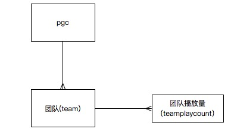
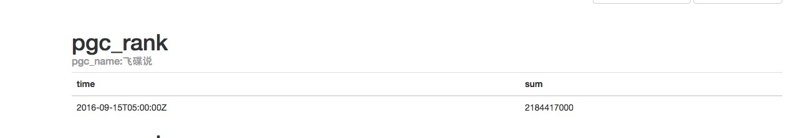

influxdb continuous query实战总结
Time series Database(时序数据库)
什么是时间序列数据？最简单的定义就是数据格式里包含timestamp字段的数据。比如股票市场的价格，环境中的温度，主机的CPU使用率等。但是又有什么数据是不包含timestamp的呢？几乎所有的数据都可以打上一个timestamp字段。时间序列数据更重要的一个属性是如何去查询它。在查询的时候，对于时间序列我们总是会带上一个时间范围去过滤数据。同时查询的结果里也总是会包含timestamp字段。
在实际开发使用中，我们或许会有类似这样的需求，收集一个时间段内大量的数据，然后利用这个时段内的数据进行统计运算这样的需求，时序数据库正是为这样的需求而定制的，以influxdb为例，数据存储跟传统数据库不一样，是以无序的形式存储，插入代价更低，并且时序数据库会提供大量与时间相关的函数，快速方便的进行我们需要的统计计算。在数据监控领域，时序数据库已经成了越来越多的选择
influxdb
InfluxDB 是一个开源分布式的时序、事件和指标数据库。使用 Go 语言编写，无需外部依赖。其设计目标是实现分布式和水平伸缩扩展。 它有三大特性：
1.Time Series （时间序列）：你可以使用与时间有关的相关函数（如最大，最小，求和等）
2.Metrics（度量）：你可以实时对大量数据进行计算
3.Eevents（事件）：它支持任意的事件数据
术语概念
| 术语 | 介绍 |
|---|---|
database |
相当于mysql中的database |
measurement |
相当于mysql中的表 |
point |
相当于mysql中的行 |
tag |
相当于mysql中的索引，只支持字符串类型 |
field |
相当于mysql中的列，支持多种类型 |
retention policy |
保存策略，这是influxdb特有的属性，rp指定数据在influxdb中的保存时间，时间已过，influxdb会自动清除数据（注：influxdb没有直接提供删除数据的接口，若要删除数据只能通过修改数据的rp来删除数据） |
continuous query |
influxdb特色功能之一，相当于定时任务 |
实战
需求：制作一个视频pgc的实时播放量排行列表
视频pgc相当于暴走漫画，暴走漫画旗下会有在各大视频网站都有自己的主页，每个站点都有自己的播放量，现在我们需要将这些pgc下面的数据聚合起来，并且需要获取最新的内容。如果每次取这个列表的时候都要重新算一遍，无疑十分的浪费，这个时候就可以使用influxdb的cq来实现这个功能，通过cq，我们能定时的算出pgc的排行榜，并写入一种新表中，每次我们读取数据的时候，只要去读那张表就可以了。

team: pgc+站点名（如暴走漫画-youku）
continuous query设计
首先先看一下我们实时抓取过来的数据的结构
pgc_name是指pgc的名称如暴走漫画，pgc_user_id指pgc+站点名的唯一标识， play_count是播放量
由于原始数据得到的是pgc下的某个站点数据，因而我们需要将其各个站点的数据加起来，并且我们要做的是每小时更新的排行榜，因此我们需要每小时更新一次最新的数据。因此我们需要一个每小时执行一次的cq
CREATE CONTINUOUS QUERY sum1 ON rails BEGIN SELECT sum(play_num) INTO rails.pgc_rank FROM rails.pgc_data GROUP BY pgc_name, time(1h) END
这段cq所执行的是，每隔一小时，执行 SELECT sum(play_num) INTO rails.pgc_rank FROM rails.pgc_data GROUP BY pgc_name 这条语句，这条语句通过group对数据进行分组计算，并写入一张新表pgc_rank中，这样一来我们要获取最新的排名数据，只需要去查pgc_rank这张表就行了。
注意： cq执行的语句必须在group by中指定time否则将无法执行，同时，如果不手动指定RESAMPLE(也就是执行时间)，默认的执行时间间隔是group by 指定的时间间隔
让我们来看下这条语句每小时具体执行了什么样的语句
SELECT sum(play_num) INTO rails.pgc_rank FROM rails.pgc_data WHERE time >= '2016-09-04T09:00:00Z' AND time < '2016-09-04T10:01:00Z' GROUP BY pcg_name, time(1h)
可以看到这个cq每次执行的时候，都以执行的时间为节点，去查一小时前的这个时间到现在内所有的数据，这样就避免了很多繁复的工作。当然influxdb在cq上提供了十分强大的可定制功能可以满足各种执行事的时间间隔，如执行时统计的是以执行的这个时间为节点的两个小时前到1个小时前之间的数据等等这样的需求
回填continuous query数据
通过之前的语句我们也看到了，cq执行的时候是以这个cq的时间作为当前时间节点，这也就意味着，这个cq创建之前，所有的数据是都没有办法统计写入的，因此如果要想补充cq创建之前的数据，就只能手动回填数据，回填语句基本可以仿照cq执行的语句来操作。如我要回填2016-07-28到2016-09-04的数据，只需要执行类似于这样的语句就可以了
SELECT sum(play_num) INTO rails.pgc_rank FROM rails.pgc_data WHERE time >= '2016-07-28T09:00:00Z' AND time < '2016-09-04T10:01:00Z' GROUP BY pcg_name, time(1h)
查询最新排行榜
我在写这篇博客的时候，influxdb稳定版本为0.13, 测试版为1.0，截止到最新的测试版，influxdb并没有加入子查询功能(虽然很早的时候已经有了这个issue - -)，因此一条查询语句无法直接查出排行榜，只能查出，当前最新时段所有pgc的播放量数据，然后在用其他方式进行排序
select * from pgc_rank group by pgc_name order by desc limit 1
首先我们写进的新表中存的是，各个pgc在各个时段上的总播放量排行，因此我们需要取最近的播放量进行排名，首先group by 分组，然后用order by desc对分组数据进行排序，最后只取每个分组中的第一个数据， order by desc在influxdb中默认是按时间倒序排列，同时，指定按时间倒序排列后就不能再指定其他的顺序排列，否则就会报错。
去出来的数据最终是这个样子

总结
在使用influxdb的这个过程，充分感受到了他的强大之处，尤其是处理类似这种极度依赖时间的数据，influxdb的优势无比的明显，无论是性能，还是便利性都是高于传统数据库。但是influxdb还在蓬勃发展中，很多功能并不完善，但是有理由继续期待这个数据库。